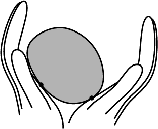

Michael Erdmann and I have developed a method to reconstruct the shape of an unknown object using tactile sensors without requiring object immobilization [1][2]. Instead, the robot manipulates the object without prehension. The robot infers the shape, motion and center of mass of the object based on the motion of the contact points as measured by tactile sensors. This allows for a natural, continuous interaction between manipulation and sensing. Eventually, it will make robots more capable in the physical world by enabling them to pick up unknown objects.
We have analyzed several different cases of the tactile shape reconstruction problem. First, we considered planar shapes with quasistatic dynamics. Simulations and experiments have validated the analytic results. Next, we extended the analysis to the full dynamics and prove observability of the nonlinear system describing the shape and motion of the object being manipulated. In our simulations, a simple observer based on Newton’s method for root finding can recover unknown shapes with almost negligible errors. Using the same framework we can also describe the shape and dynamics of three-dimensional objects. However, there are some fundamental differences between the planar and three-dimensional case, due to increased tangent dimensionality. Also, perfect global shape reconstruction is impossible in the 3D case, but it is almost trivial to obtain upper and lower bounds on the shape. The 3D shape reconstruction method has also been implemented and we present some simulation results.
The picture on the right shows the basic idea of tactile shape reconstruction in 2D. The fingers rotate about the origin and sense the contact points. Based on the sensor data we can simultaneously reconstruct the shape and motion of the unknown object.
Below is a picture of the experimental setup. It is implemented using an Adept robot arm moving around the two palms (marked with the long white arrows). The object is also marked with an arrow. This is done so that we can sense the ‘ground truth’ with the Adept vision system and compare it with the shape and motion reconstruction from tactile data.
In three dimensions we need three palms:
The next movies show a simple motion of an unknown object rolling around on three stationary palms and the reconstructed curves traced out by the contact points. The convex hull of the curves provides a lower bound on the shape of the object.
@incollection{moll2004reconstructing-the-shape-and-motion-of-unknown,
abstract = "We present a method to simultaneously reconstruct the shape and
motion of an unknown smooth convex object. The object is manipulated by
planar palms covered with tactile elements. The shape and dynamics of
the object can be expressed as a function of the sensor values and the
motion of the palms. We present a brief review of previous results for
the planar case. In this paper we show that the 3D case is
fundamentally different from the planar case, due to increased tangent
dimensionality. The main contribution of this paper is a shape-dynamics
analysis in 3D, and the synthesis of shape approximation methods via
reconstructed contact point curves.",
author = "Moll, Mark and Erdmann, Michael A.",
booktitle = "Algorithmic Foundations of Robotics V",
doi = "10.1007/b80173",
editor = "Boissonnat, Jean-Daniel and Burdick, Joel and Goldberg, Ken and Hutchinson, Seth",
keywords = "tactile sensing, shape reconstruction, nonprehensile
manipulation, contact kinematics",
pages = "293--310",
publisher = "Springer Verlag",
series = "Springer Tracts in Advanced Robotics",
title = "Reconstructing the Shape and Motion of Unknown Objects with Active
Tactile Sensors",
year = "2004"
}We present a method to simultaneously reconstruct the shape and motion of an unknown smooth convex object. The object is manipulated by planar palms covered with tactile elements. The shape and dynamics of the object can be expressed as a function of the sensor values and the motion of the palms. We present a brief review of previous results for the planar case. In this paper we show that the 3D case is fundamentally different from the planar case, due to increased tangent dimensionality. The main contribution of this paper is a shape-dynamics analysis in 3D, and the synthesis of shape approximation methods via reconstructed contact point curves.
@phdthesis{moll2002shape-recon-using-activ,
abstract = "We present a new method to reconstruct the shape of an unknown
object using tactile sensors, without requiring object immobilization.
Instead, sensing and nonprehensile manipulation occur simultaneously.
The robot infers the shape, motion and center of mass of the object
based on the motion of the contact points as measured by the tactile
sensors. This allows for a natural, continuous interaction between
manipulation and sensing. We analyze the planar case first by assuming
quasistatic dynamics, and present simulation results and experimental
results obtained using this analysis. We extend this analysis to the
full dynamics and prove observability of the nonlinear system
describing the shape and motion of the object being manipulated. In our
simulations, a simple observer based on Newton's method for root
finding performs really well. Using the same framework we can also
describe the shape and dynamics of three-dimensional objects. However,
there are some fundamental differences between the planar and
three-dimensional case, due to increased tangent dimensionality. Also,
perfect global shape reconstruction is impossible in the 3D case, but
it is almost trivial to obtain upper and lower bounds on the shape. The
3D shape reconstruction method has also been implemented and we present
some simulation results.",
address = "Pittsburgh, PA",
author = "Moll, Mark",
keywords = "tactile sensing, shape reconstruction, nonprehensile
manipulation",
month = jul,
pubtype = "Other",
school = "Computer Science Department, Carnegie Mellon University",
title = "Shape Reconstruction Using Active Tactile Sensors",
year = "2002"
}We present a new method to reconstruct the shape of an unknown object using tactile sensors, without requiring object immobilization. Instead, sensing and nonprehensile manipulation occur simultaneously. The robot infers the shape, motion and center of mass of the object based on the motion of the contact points as measured by the tactile sensors. This allows for a natural, continuous interaction between manipulation and sensing. We analyze the planar case first by assuming quasistatic dynamics, and present simulation results and experimental results obtained using this analysis. We extend this analysis to the full dynamics and prove observability of the nonlinear system describing the shape and motion of the object being manipulated. In our simulations, a simple observer based on Newton’s method for root finding performs really well. Using the same framework we can also describe the shape and dynamics of three-dimensional objects. However, there are some fundamental differences between the planar and three-dimensional case, due to increased tangent dimensionality. Also, perfect global shape reconstruction is impossible in the 3D case, but it is almost trivial to obtain upper and lower bounds on the shape. The 3D shape reconstruction method has also been implemented and we present some simulation results.